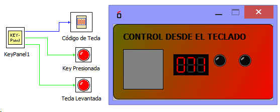

Control desde el Teclado.
Este bloque permite devover el codiog de una tecla pulsada del teclado.
El Bloque tiene las salidas:
KeyCode: Codigo de tecla Key Pressed: Tecla presionada Key Reñeasses: Tecla Levantada.
KeyCode: Codigo de tecla
Key Pressed: Tecla presionada
Key Reñeasses: Tecla Levantada.
